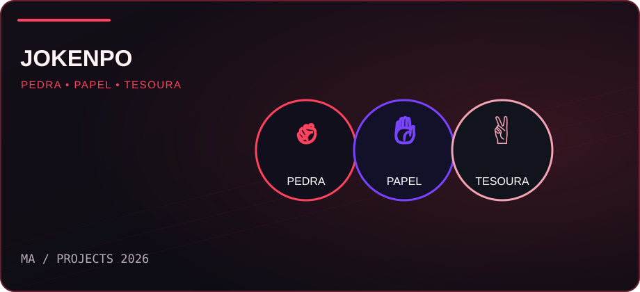
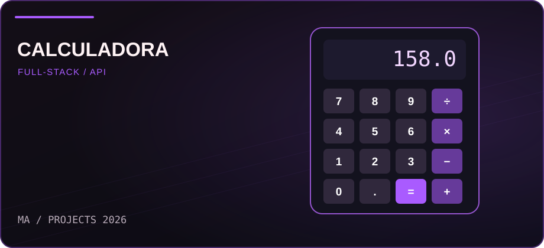
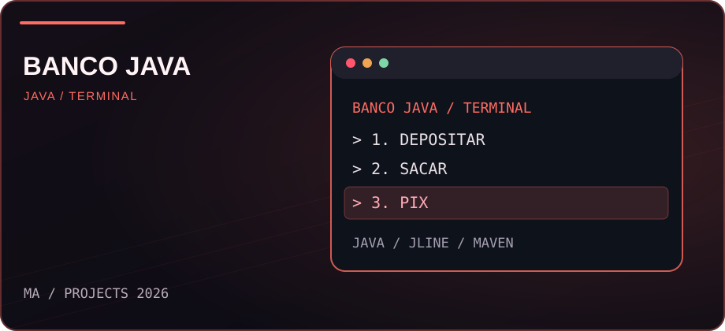
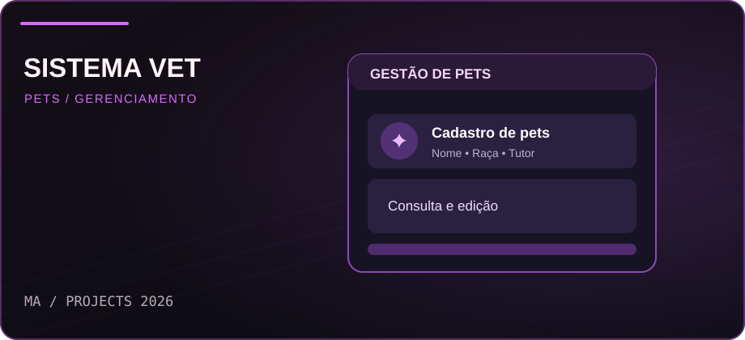

01 / WEB + APIEm evolução
JoKenPo com API
Pedra, papel e tesoura com interface web e lógica da rodada processada em uma API Node.js/Express.
Olá, eu sou Maillon Andrade
Desenvolvedor back-end em formação
Transformo aprendizado em projetos práticos. Estudo desenvolvimento de sistemas, APIs REST, JavaScript e Node.js, sempre buscando entender a lógica que faz uma aplicação funcionar de verdade.

{
02 "status": 200,
03 "message": "Tudo certo!",
04 "developer": "Maillon"
05}
01 / MINHA HISTÓRIA
Sou estudante de Análise e Desenvolvimento de Sistemas na UNINTER e estou construindo minha carreira em programação. Tenho maior interesse pelo back-end: APIs, regras de negócio, persistência de dados e integração entre sistemas.
Gosto de aprender desenvolvendo. Meus projetos são uma forma de experimentar, cometer erros, corrigir e entender a tecnologia além da teoria.
Acompanhe minha evolução no GitHubRotas, validações e comunicação com o front-end.
Dominar os fundamentos e escrever código compreensível.
Evoluindo meus conhecimentos em SQL e modelagem.
02 / MEU KIT DE FERRAMENTAS
O que utilizo nos projetos e o que venho aprofundando nos estudos.
 JavaScriptPrincipal linguagem de práticaPrática
JavaScriptPrincipal linguagem de práticaPrática Git / GitHubProjetos e versionamentoPrática
Git / GitHubProjetos e versionamentoPrática HTMLEstrutura das interfacesPrática
HTMLEstrutura das interfacesPrática SQL / MySQLConsultas e banco de dadosEstudando
SQL / MySQLConsultas e banco de dadosEstudando JavaFundamentos e orientação a objetosEstudando
JavaFundamentos e orientação a objetosEstudando03 / TRABALHO NA PRÁTICA
Projetos reais de estudo. Explore o funcionamento e veja o código-fonte.

Pedra, papel e tesoura com interface web e lógica da rodada processada em uma API Node.js/Express.

Calculadora com operações processadas no servidor, validações e histórico local no navegador.

Sistema bancário fictício de terminal com login, saldo, depósitos, saques e transferências simuladas.

Protótipo de cadastro, consulta e gerenciamento de pets utilizando JavaScript e armazenamento local.
Os projetos são exercícios práticos em evolução. Algumas demonstrações utilizam APIs hospedadas em serviços externos, que podem levar alguns instantes para responder.
04 / CAMINHO DE APRENDIZADO
UNINTER · Graduação EAD
Formação complementar · 600 horas
Formação concluída
Meu foco é aprofundar banco de dados, construção de APIs, validações, testes e segurança. Também estou explorando Python para ampliar minhas possibilidades de automação e back-end.
05 / VAMOS CONVERSAR?
Estou em busca de experiências práticas e oportunidades para crescer como desenvolvedor. Se quiser conhecer meus projetos ou trocar uma ideia sobre tecnologia, entre em contato.